Chapter 2 Interpretación
La media representa el número promedio de anillos de los individuos de la muestra, mientras que la mediana representa el valor central de la distribución.La desviación estándar permite observar qué tan dispersos se encuentran los valores de Anillos respecto a su media. Por otra parte, el rango intercuartílico representa la dispersión del 50 % central de las observaciones. Los valores mínimo y máximo permiten identificar el rango en el que se encuentra el número de anillos.La asimetría permite determinar si la distribución se encuentra desplazada hacia alguno de sus extremos. Si la asimetría es positiva, existe una mayor concentración de valores pequeños y una cola hacia valores grandes. La curtosis permite analizar el comportamiento de la distribución respecto a su concentración y presencia de valores extremos.
data2 %>% ggplot(aes(x = Anillos)) +
geom_histogram(
aes(y = after_stat(density)),
binwidth = 1,
fill = "#FFB4EC",
color = "purple",
alpha = 0.6
) +
geom_density(
color = "#E41CB2",
linewidth = 1.2
) +
labs( title = "Distribución del número de anillos",
x = "Número de anillos",
y = "Densidad"
) +
theme_bw()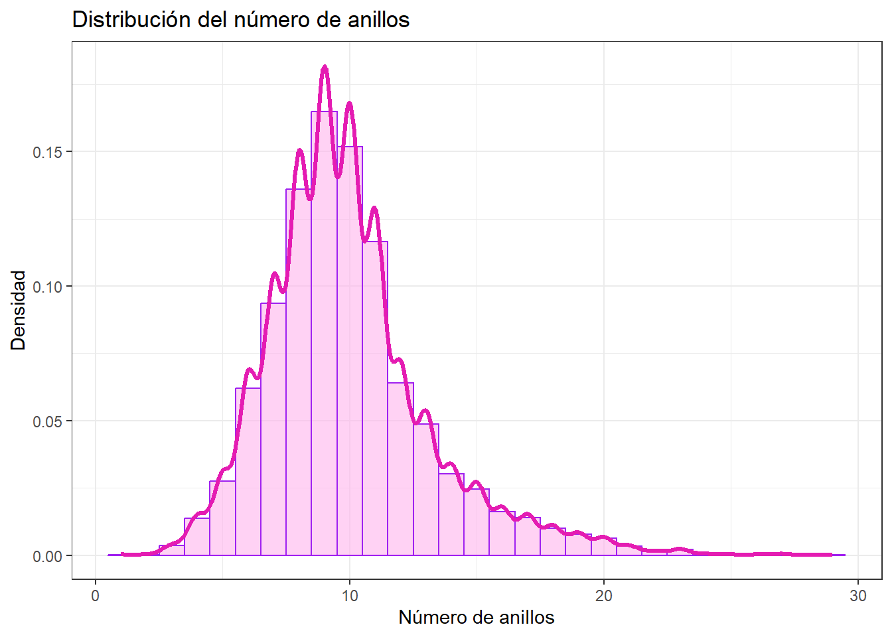
#InterpretaciónEl histograma permite observar la distribución de la variable Anillos. Se puede identificar en qué valores se concentra la mayor cantidad de observaciones y cómo disminuye la frecuencia hacia los extremos.La curva de densidad permite visualizar de manera más clara la forma general de la distribución.
data2 %>%
ggplot(aes(y = "", x = Anillos)) +
geom_boxplot( fill = "#FFB4EC", color = "purple" ) +
stat_summary( fun = mean,
geom = "point",
shape = 20, size = 3,
color = "#E41CB2" ) +
labs( title = "Diagrama de caja del número de anillos", x = "Número de anillos", y = "" ) +
theme_bw()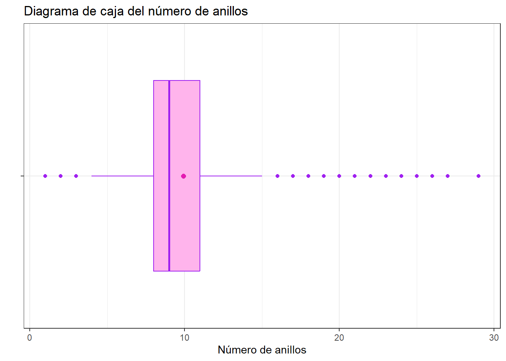
#Interpretación.El diagrama de caja permite observar la mediana, los cuartiles y la dispersión de la variable Anillos. Los puntos que aparecen alejados del resto de las observaciones pueden representar posibles valores atípicos.La posición de la media respecto a la mediana también permite complementar el análisis de la forma de la distribución.
data2 %>%
select(where(is.numeric), -Anillos) %>%
pivot_longer( cols = everything(),
names_to = "variable",
values_to = "valor" ) %>%
group_by(variable) %>%
summarise( n = length(valor),
media = mean(valor),
sd = sd(valor),
mediana = median(valor),
RIC = IQR(valor),
Q1 = quantile(valor, 0.25),
Q3 = quantile(valor, 0.75),
minimo = min(valor), maximo = max(valor), asimetria = skewness(valor), curtosis = kurtosis(valor)
)## # A tibble: 7 × 12
## variable n media sd mediana RIC Q1 Q3 minimo maximo asimetria
## <chr> <int> <dbl> <dbl> <dbl> <dbl> <dbl> <dbl> <dbl> <dbl> <dbl>
## 1 Altura 4177 0.140 0.0418 0.14 0.05 0.115 0.165 0 1.13 3.13
## 2 Diametro 4177 0.408 0.0992 0.425 0.13 0.35 0.48 0.055 0.65 -0.609
## 3 Largo 4177 0.524 0.120 0.545 0.165 0.45 0.615 0.075 0.815 -0.640
## 4 Peso 4177 0.829 0.490 0.800 0.712 0.442 1.15 0.002 2.83 0.531
## 5 Peso_ca… 4177 0.239 0.139 0.234 0.199 0.13 0.329 0.0015 1.00 0.621
## 6 Peso_ca… 4177 0.359 0.222 0.336 0.316 0.186 0.502 0.001 1.49 0.719
## 7 Peso_vi… 4177 0.181 0.110 0.171 0.160 0.0935 0.253 0.0005 0.76 0.592
## # ℹ 1 more variable: curtosis <dbl>Interpretación
El resumen estadístico permite comparar las diferentes características físicas de los abalones. Las variables de longitud, diámetro y altura permiten describir las dimensiones físicas de los individuos, mientras que las variables de peso permiten analizar diferentes componentes de su masa. La comparación entre la media y la mediana permite identificar posibles asimetrías. Además, los valores mínimo y máximo permiten conocer el rango de cada variable.
data2 %>%
ggplot(aes(y = "", x = Largo)) +
geom_boxplot( fill = "#FFB4EC", color = "purple" ) +
stat_summary( fun = mean,
geom = "point",
shape = 20,
size = 3,
color = "#E41CB2" ) +
labs( title = "Largo", x = "Largo", y = "" ) +
theme_bw() -> p1data2 %>%
ggplot(aes(y = "", x = Diametro)) +
geom_boxplot( fill = "#FFB4EC", color = "purple" ) +
stat_summary( fun = mean,
geom = "point",
shape = 20, size = 3,
color = "#E41CB2" ) +
labs( title = "Diámetro", x = "Diámetro", y = "" ) +
theme_bw() -> p2data2 %>%
ggplot(aes(y = "", x = Altura)) +
geom_boxplot( fill = "#FFB4EC", color = "purple" ) +
stat_summary( fun = mean,
geom = "point",
shape = 20,
size = 3,
color = "#E41CB2" ) +
labs( title = "Altura", x = "Altura", y = "" ) +
theme_bw() -> p3data2 %>%
ggplot(aes(y = "", x = Peso)) +
geom_boxplot(fill = "#FFB4EC",color = "purple") +
stat_summary(fun = mean,
geom = "point",
shape = 20,
size = 3,
color = "#E41CB2") +
labs(title = "Peso total", x = "Peso",y = "") +
theme_bw() -> p4data2 %>%
ggplot(aes(y = "", x = Peso_carne)) +
geom_boxplot( fill = "#FFB4EC", color = "purple" ) +
stat_summary( fun = mean,
geom = "point",
shape = 20,
size = 3,
color = "#E41CB2" ) +
labs( title = "Peso de la carne", x = "Peso de la carne", y = "" ) + theme_bw() -> p5data2 %>%
ggplot(aes(y = "", x = Peso_visceras)) +
geom_boxplot( fill = "#FFB4EC", color = "purple" ) +
stat_summary( fun = mean,
geom = "point",
shape = 20,
size = 3,
color = "#E41CB2" ) +
labs( title = "Peso de las vísceras", x = "Peso de las vísceras", y = "" ) + theme_bw() -> p6data2 %>%
ggplot(aes(y = "", x = Peso_caparazon)) +
geom_boxplot( fill = "#FFB4EC", color = "purple" ) +
stat_summary( fun = mean,
geom = "point",
shape = 20,
size = 3,
color = "#E41CB2" ) +
labs( title = "Peso del caparazón", x = "Peso del caparazón", y = "" ) + theme_bw() -> p7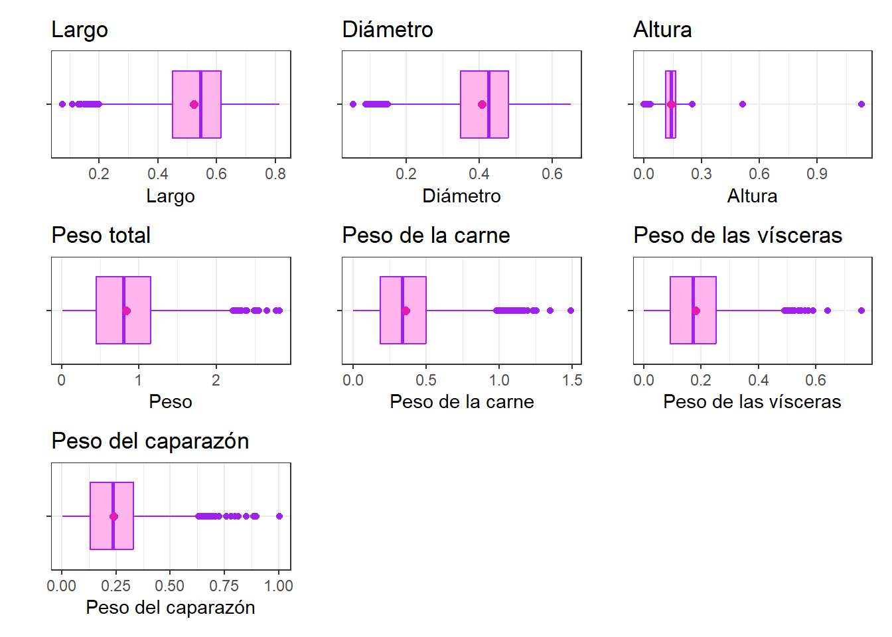
#InterpretaciónLos diagramas de caja permiten comparar la distribución y dispersión de las diferentes características físicas.Las variables relacionadas con el peso pueden presentar valores alejados de la concentración principal de los datos. Estos valores deben ser identificados como posibles observaciones atípicas y no necesariamente como errores.Las variables de dimensiones físicas permiten observar la variabilidad en el tamaño de los individuos de la muestra.
## Sexo n Porcentaje
## 1 F 1307 31.29
## 2 I 1342 32.13
## 3 M 1528 36.58data2 %>%
ggplot(aes(x = Sexo)) +
geom_bar( fill = "#FFB4EC", color = "purple" ) +
labs( title = "Distribución del sexo", x = "Sexo", y = "Frecuencia" ) + theme_bw()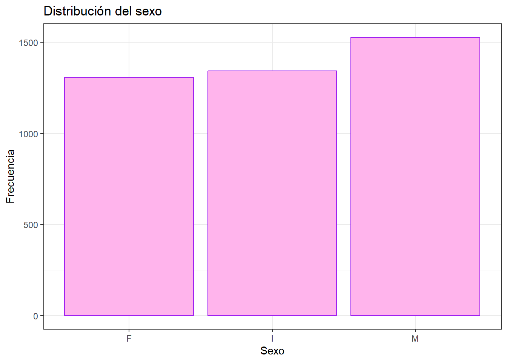
#Interpretación
El gráfico permite observar la cantidad de individuos pertenecientes a cada categoría de Sexo. La comparación de las frecuencias permite determinar si existe un predominio de alguna categoría o si la distribución de los individuos es relativamente equilibrada.
data2 %>%
ggplot(aes(x = Largo, y = Anillos)) +
geom_point( alpha = 0.4, color = "#E41CB2" ) +
geom_smooth( method = "lm", se = TRUE ) +
labs( title = "Relación entre largo y número de anillos", x = "Largo", y = "Número de anillos" ) +
theme_bw()## `geom_smooth()` using formula = 'y ~ x'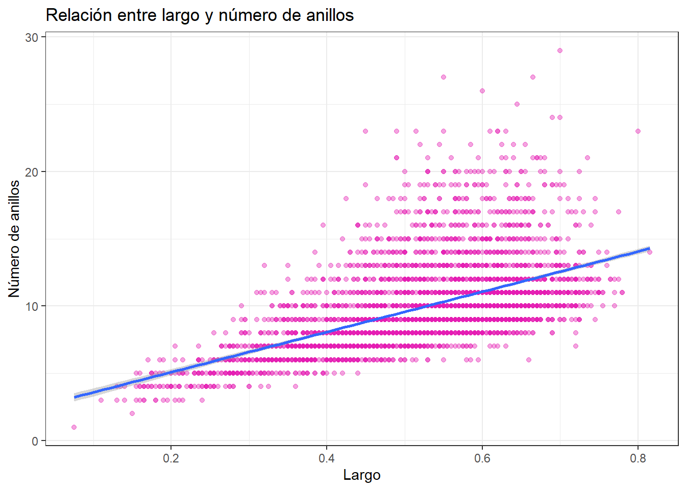
#Interpretación
El gráfico permite observar la relación entre el largo del abalone y el número de anillos. La tendencia general permite evaluar si los individuos con mayor longitud tienden a presentar un mayor número de anillos.
data2 %>%
ggplot(aes(x = Diametro, y = Anillos)) +
geom_point( alpha = 0.4, color = "#E41CB2" ) +
geom_smooth( method = "lm", se = TRUE ) +
labs( title = "Relación entre diámetro y número de anillos", x = "Diámetro", y = "Número de anillos" ) +
theme_bw()## `geom_smooth()` using formula = 'y ~ x'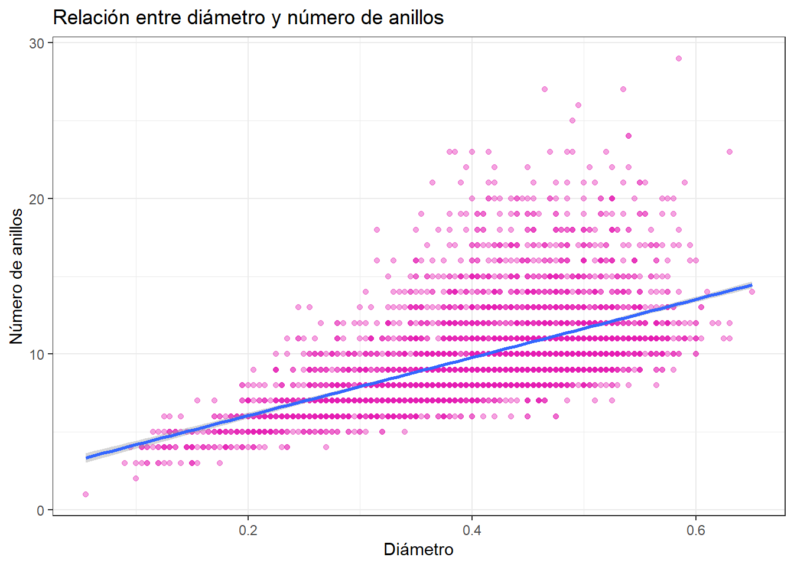
data2 %>%
ggplot(aes(x = Altura, y = Anillos)) +
geom_point( alpha = 0.4, color = "#E41CB2" ) +
geom_smooth( method = "lm", se = TRUE ) +
labs( title = "Relación entre altura y número de anillos", x = "Altura", y = "Número de anillos" ) +
theme_bw()## `geom_smooth()` using formula = 'y ~ x'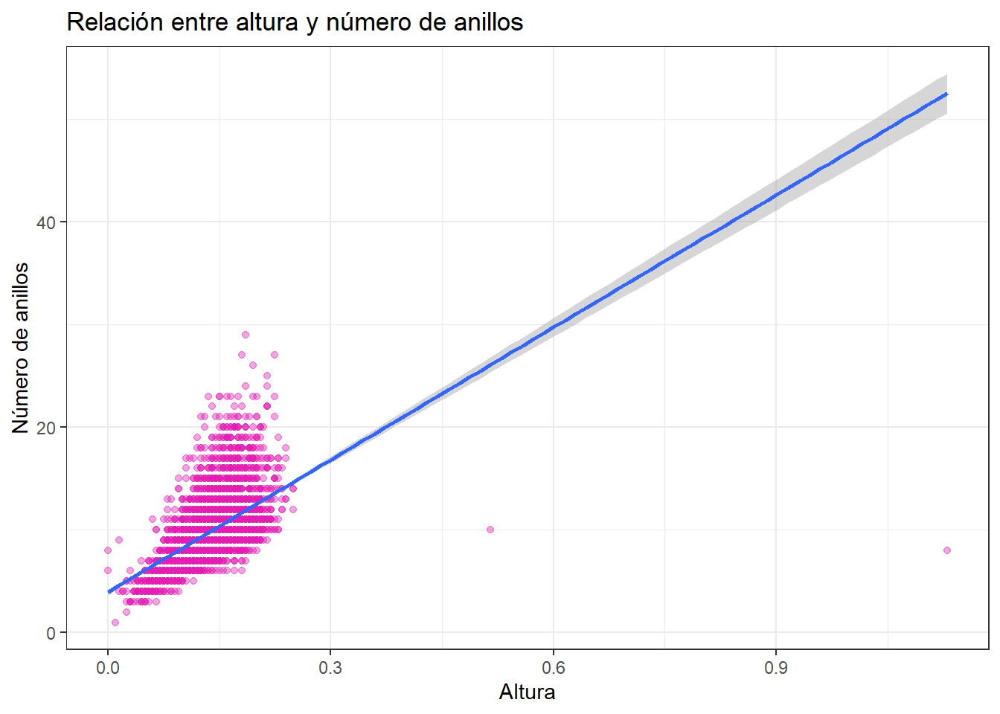
data2 %>%
ggplot(aes(x = Peso, y = Anillos)) +
geom_point( alpha = 0.4, color = "#E41CB2" ) +
geom_smooth( method = "lm", se = TRUE ) +
labs( title = "Relación entre peso y número de anillos", x = "Peso", y = "Número de anillos" ) +
theme_bw()## `geom_smooth()` using formula = 'y ~ x'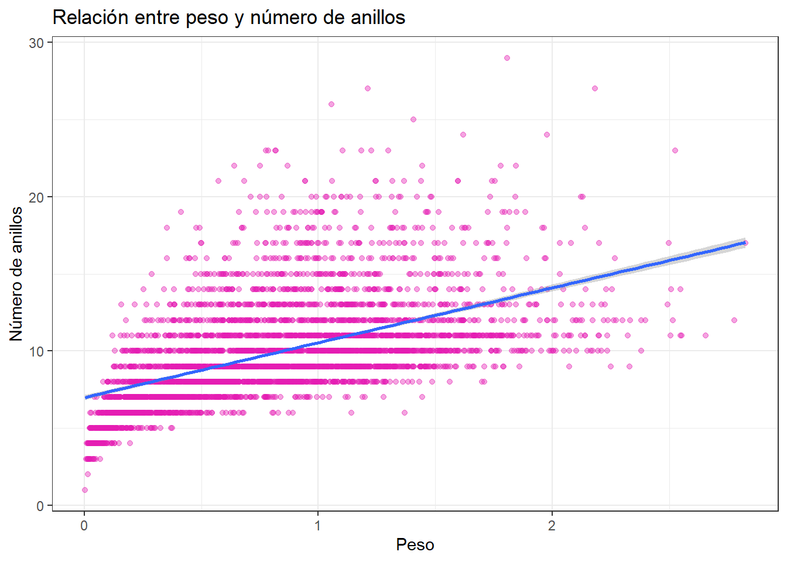
data2 %>%
ggplot(aes(x = Peso_carne, y = Anillos)) +
geom_point( alpha = 0.4, color = "#E41CB2" ) +
geom_smooth( method = "lm", se = TRUE ) +
labs( title = "Relación entre peso de la carne y número de anillos", x = "Peso de la carne", y = "Número de anillos" ) +
theme_bw()## `geom_smooth()` using formula = 'y ~ x'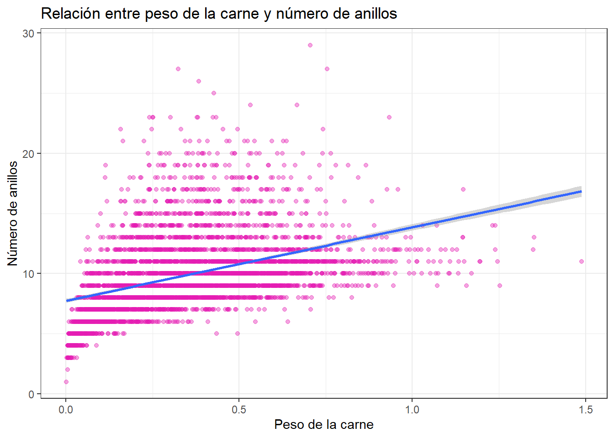
data2 %>%
ggplot(aes(x = Peso_visceras, y = Anillos)) +
geom_point( alpha = 0.4, color = "#E41CB2" ) +
geom_smooth( method = "lm", se = TRUE ) +
labs( title = "Relación entre peso de las vísceras y número de anillos", x = "Peso de las vísceras", y = "Número de anillos" ) +
theme_bw()## `geom_smooth()` using formula = 'y ~ x'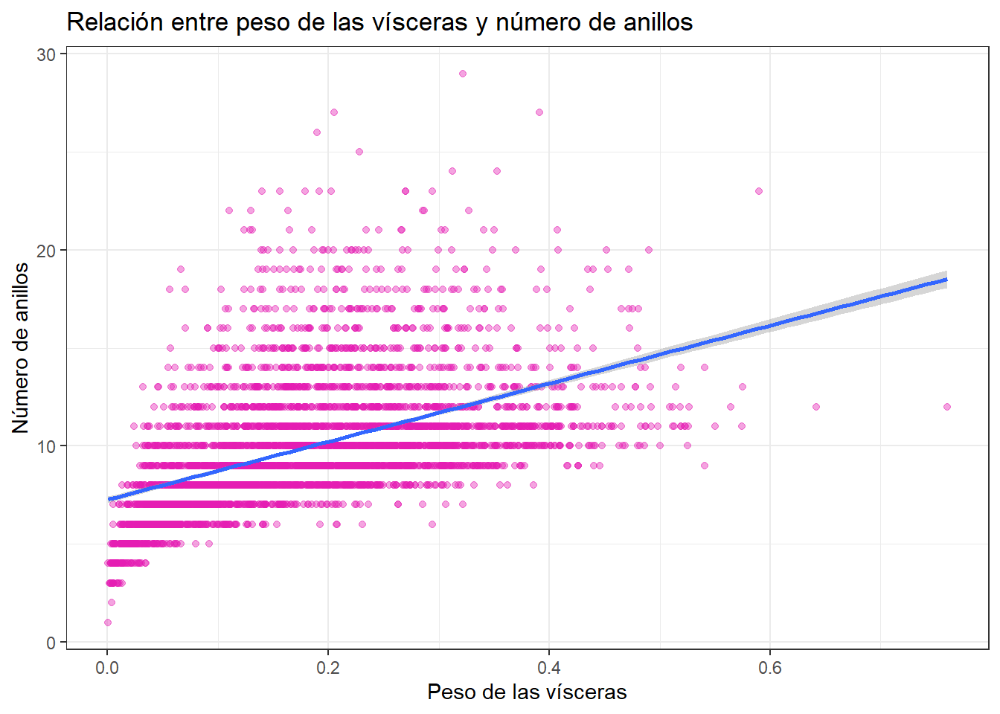
data2 %>%
ggplot(aes(x = Peso_caparazon, y = Anillos)) +
geom_point( alpha = 0.4, color = "#E41CB2" ) +
geom_smooth( method = "lm", se = TRUE ) +
labs( title = "Relación entre peso del caparazón y número de anillos", x = "Peso del caparazón", y = "Número de anillos" ) +
theme_bw()## `geom_smooth()` using formula = 'y ~ x'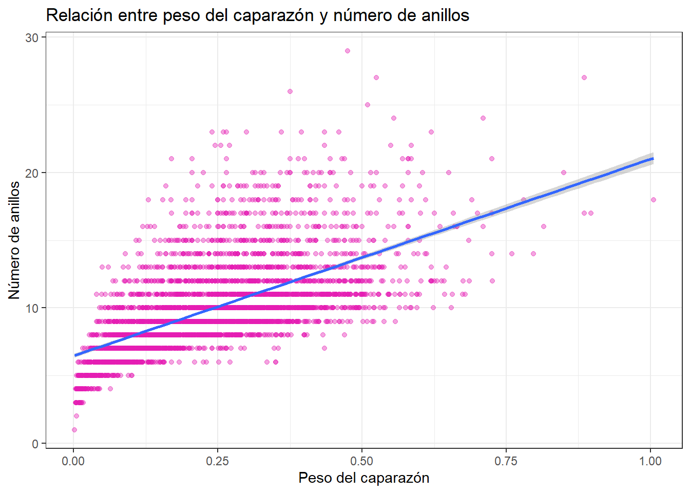
## Largo Diametro Altura Peso Peso_carne Peso_visceras
## Largo 1.000 0.987 0.828 0.925 0.898 0.903
## Diametro 0.987 1.000 0.834 0.925 0.893 0.900
## Altura 0.828 0.834 1.000 0.819 0.775 0.798
## Peso 0.925 0.925 0.819 1.000 0.969 0.966
## Peso_carne 0.898 0.893 0.775 0.969 1.000 0.932
## Peso_visceras 0.903 0.900 0.798 0.966 0.932 1.000
## Peso_caparazon 0.898 0.905 0.817 0.955 0.883 0.908
## Anillos 0.557 0.575 0.557 0.540 0.421 0.504
## Peso_caparazon Anillos
## Largo 0.898 0.557
## Diametro 0.905 0.575
## Altura 0.817 0.557
## Peso 0.955 0.540
## Peso_carne 0.883 0.421
## Peso_visceras 0.908 0.504
## Peso_caparazon 1.000 0.628
## Anillos 0.628 1.000correlaciones <- data2 %>%
summarise(
Largo = cor(Largo, Anillos),
Diametro = cor(Diametro, Anillos),
Altura = cor(Altura, Anillos),
Peso = cor(Peso, Anillos),
Peso_carne = cor(Peso_carne, Anillos),
Peso_visceras = cor(Peso_visceras, Anillos),
Peso_caparazon = cor(Peso_caparazon, Anillos)
)
correlaciones## Largo Diametro Altura Peso Peso_carne Peso_visceras
## 1 0.5567196 0.5746599 0.5574673 0.5403897 0.4208837 0.5038192
## Peso_caparazon
## 1 0.627574#Interpretación
El coeficiente de correlación de Pearson permite medir la intensidad y dirección de la relación lineal entre cada característica física y el número de anillos. El coeficiente toma valores entre -1 y 1. Valores positivos indican que, en general, cuando una variable aumenta, el número de anillos también tiende a aumentar. Valores negativos indican una relación inversa. Un valor cercano a cero indica una relación lineal débil o inexistente.La correlación permite identificar qué variables presentan una mayor asociación lineal con Anillos. Sin embargo, una correlación no implica necesariamente una relación causal entre las variables.
data2 %>%
ggplot(aes(x = Sexo, y = Anillos)) +
geom_boxplot( fill = "#FFB4EC", color = "purple" ) +
stat_summary( fun = mean,
geom = "point",
shape = 20,
size = 3,
color = "#E41CB2" ) +
labs( title = "Número de anillos según sexo", x = "Sexo", y = "Número de anillos" ) +
theme_bw()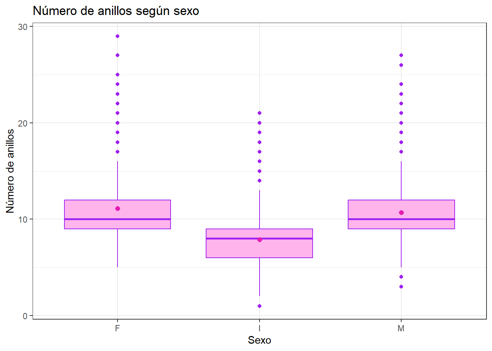
#Interpretación
El diagrama de caja permite comparar la distribución de Anillos entre las diferentes categorías de Sexo.
La comparación de las medianas, los rangos intercuartílicos y los posibles valores atípicos permite identificar diferencias descriptivas entre los grupos.
#Conclusión del análisis exploratorio
El análisis exploratorio permite conocer las principales características de la base de datos Abalone. La variable Anillos presenta variabilidad entre los individuos, mientras que las variables físicas permiten describir diferentes características relacionadas con el tamaño y peso de los abalones.
El análisis gráfico y estadístico permite identificar la distribución de cada variable, posibles valores atípicos y relaciones entre las características físicas y el número de anillos.
Las variables cuantitativas pueden analizarse mediante medidas descriptivas, histogramas, diagramas de caja y correlaciones. Por su parte, Sexo permite realizar comparaciones entre grupos.
Estos resultados proporcionan una primera descripción de los datos y sirven como base para realizar posteriormente análisis estadísticos más específicos.